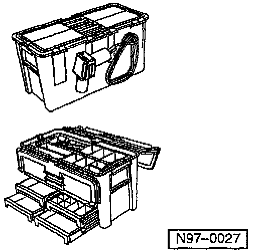

Platform Wiring Harness - Repairing
Group: 97Number: 98-03
Date: July 24, 1998
Subject:
Wiring Harness, Repairing
Model(s):
All
Condition
Various electrical malfunctions could have been caused by improper repairs to the wiring harness (i.e. soldering, wire nuts, taping etc.).
New generation vehicles have a "platform wire harness" concept, where the majority of the wiring is contained in a single wire harness. This allows for a reduction in the number of terminations, and thus in the total electrical resistance within the wiring harness.
The "platform wire harness" also uses;
^ Extremely small terminals (0.64 mm wide) and wires (0.34 sq.mm cross-section) carrying very low level signals (e.g. sensor and control signals) which could be damaged by using improper repair procedures.
^ Interlinked electronic and mechanical functions within a specific system (e.g. MIL, Airbag, Sat-Nav, etc.) which cause repairs to be complex.
^ There is also a marked reduction in both installation and accessible space.

The VAS 1978 wiring harness repair kit was developed as a tool for wiring harness repairs.
All approved materials and a repair guide are supplied in the repair kit, including approved closed barrel butt splice connectors with thermoplastic material inside and shrink tubing outside, specified for 3 defined wire gage ranges that are color coded (red, blue, yellow).

Soldering is specifically omitted from VAS 1978 repair instructions due to:
^ Questionable quality and reliability of soldered joints.
^ Potential for consequential damage at soldered joints (due to hot soldering iron in close proximity to other components and wiring).
^ Safety hazards posed by a "spark gap" condition at soldered joints, when two very large gauge wires are "soldered" together. The heat generated could be sufficient to cause the insulation to melt or flame, and there is a potential for personal injury caused by molten solder.
^ Latent "Broken Wire" defect near soldered - joints, where a wire separates under the insulation due to corrosion and/or fatigue, caused by overheating wire strands during the soldering process. Overheating promotes wire embrittlement, wire strand fatigue, and corrosion.
^ Technical inferiority of a soldered joint, where wires are "stuck" together, versus a crimped or welded joint, where the wires are fused together. There is only minimal contact between wires in a soldered joint, where the main transmission path is through the solder (increased resistance). When properly accomplished, crimping reduces the nominal cross-section of a wire by about 20%. Although there is some small resistance, transmission is essentially unimpeded across a crimped joint.
Service
If wiring harness repairs are required:
1 - Always use the VAS 1978 Wire Harness Repair Kit.
2 - If the wire harness cannot be repaired using the procedure and materials contained in VAS 1978, then the wire harness must be replaced.
3 - No other procedure or materials, other than those in VAS 1978, may be used for wire harness repairs, specifically soldering, wire nuts, generic repair kits, etc.
Note:
Always review Safety Precautions in the VAS 1978 Instruction Manual prior to preforming any wiring harness repairs.
CAUTION!
Wiring that is part of the Airbag or ABS systems, and shielded wiring for components such as speed sensors or knock sensors, may not be repaired, but must ALWAYS be replaced.
DO NOT use solder when repairing a wiring harness.
Only use approved methods and materials if wiring harness repairs are required.